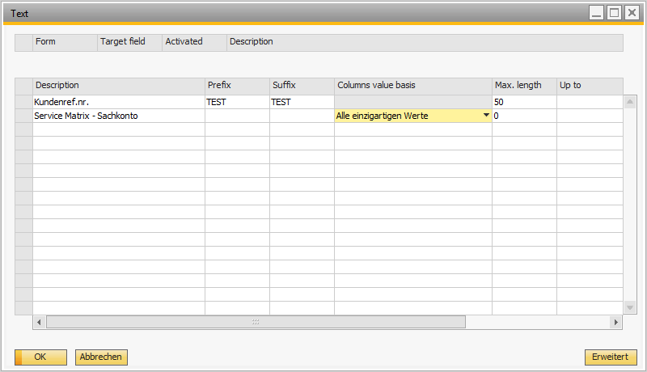
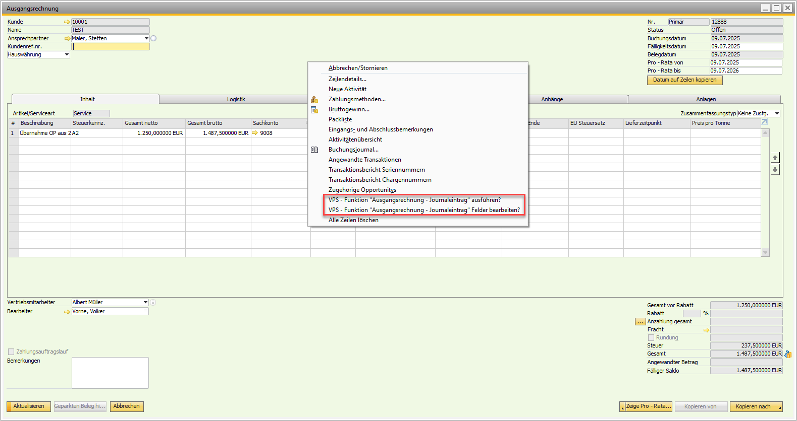
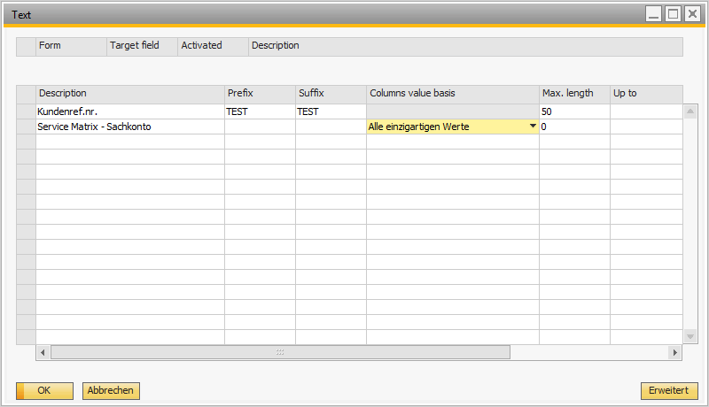
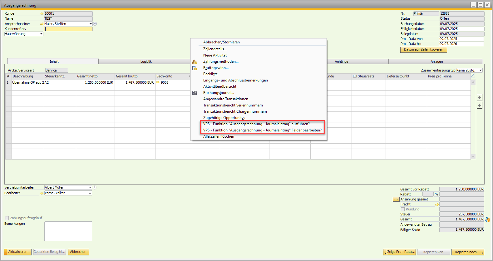

Buchungstext-Konfigurator (JE Text Setter)
Überblick
Das Versino Je Text Setter Modul automatisiert die Erstellung von Buchungstexten in SAP Business One. Es füllt automatisch die Textfelder in zahlreichen Dokumenttypen mit vordefinierten, aussagekräftigen Beschreibungen. Dies spart Zeit, reduziert Fehler und sorgt für einheitliche, nachvollziehbare Buchungstexte. Beim ersten Start wird eine umfassende Standardkonfiguration angelegt, die Sie nur noch aktivieren müssen.
Zugang zum Modul: Die Konfiguration erreichen Sie unter Versino Financial Suite > Konfiguration > JE Text Konfiguration.
Hauptfunktionen
Automatische & kontextbezogene Texterstellung
Das Modul arbeitet im Hintergrund und fügt bei der Erstellung von Belegen automatisch passende Buchungstexte ein.
Direkte Konfiguration aus Belegen (Rechtsklick)
Eine der stärksten Funktionen: Sie können direkt aus einem SAP Business One Beleg (z.B. einer Rechnung) per Rechtsklick auf ein beliebiges Textfeld eine neue Regel für die automatische Texterstellung anlegen. Das System erkennt dabei automatisch das Formular und das Feld, was die Einrichtung extrem beschleunigt.
Zentrale Konfigurationsoberfläche
Über ein zentrales Verwaltungsfenster haben Sie die volle Kontrolle. Hier können Sie in einer übersichtlichen Liste alle Regeln für die verschiedenen Dokumenttypen einzeln aktivieren, deaktivieren, bearbeiten, kopieren oder löschen.
Nahtlose Integration mit anderen Modulen
Der JeTextSetter verbessert die Funktionalität anderer Module durch konsistente Texte erheblich:
- Pro-Rata: Abgrenzungsbuchungen erhalten verständliche Texte (z.B. "Pro-Rata Abgrenzung März 2024"), was die Nachvollziehbarkeit verbessert.
- DATEV-Export: Einheitliche Buchungstexte erhöhen die Qualität der Exporte und reduzieren Rückfragen vom Steuerberater.
- Reporting: Standardisierte Texte in allen Berichten verbessern die Übersichtlichkeit und Analyse.
Anwendung
Nach der Installation ist das Modul sofort verfügbar, aber alle Regeln sind standardmäßig inaktiv. Sie müssen die gewünschten Dokumenttypen erst aktivieren.
1. Regel für einen Dokumenttyp aktivieren (Grundschritt)
- Navigieren Sie zu Versino Financial Suite > Konfiguration > JE Text Konfiguration.
- Wählen Sie in der Liste den gewünschten Dokumenttyp aus (z.B. Ausgangsrechnungen).
- Setzen Sie in der Spalte "Aktiv" den Haken.
- Speichern Sie mit "OK". Die Regel ist nun aktiv.
2. Neue Regel direkt aus einem Beleg erstellen (empfohlen)
- Öffnen Sie ein beliebiges Dokument in SAP Business One (z.B. eine Ausgangsrechnung).
- Machen Sie einen Rechtsklick auf das Textfeld, das Sie zukünftig im Buchungstext sehen möchten.
- Klicken Sie auf Journaleintrag hinzufügen.
- Das Konfigurationsfenster des JeTextSetters öffnet sich und hat bereits eine neue, vorbefüllte Regel für dieses Feld hinzugefügt.
- Die Regeln für das automatische Befüllen können jerderzeit mit Journaleintrag bearbeiten angepasst werden.
- Durch anklicken von Journaleintrag ausführen kann bereits im Vorfeld der Buchungstext im Tab Buchhaltung gesichtet werden.
- Der Text Konfigurator wird automatisch beim Hinzufügen des Beleges den Buchungstext in der Journalbuchung anpassen.
 



Tipps und Fehlerbehandlung
- Problem: Es werden keine Texte automatisch eingefügt.
Lösung: Prüfen Sie als Erstes in der Konfiguration, ob die Regel für den betreffenden Dokumenttyp aktiviert ist. - Problem: Die Konfigurationsliste ist beim ersten Öffnen leer.
Lösung: Das System erstellt die Standardkonfigurationen automatisch beim allerersten Start des Moduls. Kontaktieren Sie im Zweifel den Support. - Problem: Die direkte Konfiguration per Rechtsklick funktioniert nicht.
Lösung: Stellen Sie sicher, dass Sie auf ein Textfeld geklickt haben und das Je Text Setter Modul korrekt läuft. - Problem: Texte sind zu lang für das Zielfeld.
Lösung: Kein Grund zur Sorge, Sie können die maximale Länge der Texte im Text-Konfigurator pro Feld begrenzen. Die maximale Länge für den Buchungstext beträgt 254 Zeichen.